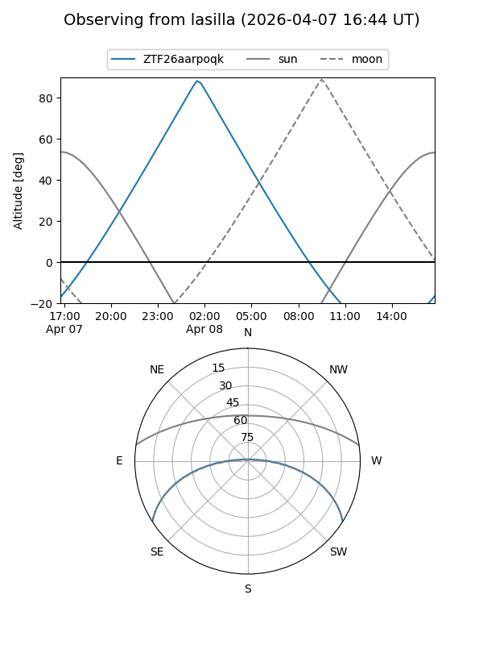
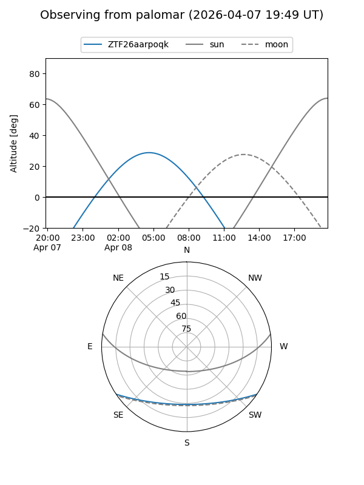

ZTF26aarpoqk
Target ZTF26aarpoqk at 2026-04-08 05:10
Aliases and brokers:
FINK: link
Lasair: link
ALeRCE: link
alt names
ZTF26aarpoqk (ztf,fink_ztf)
Coordinates:
equatorial (ra, dec) = 148.8576,-27.70749
equatorial (HMS+DMS) = 09:55:25.81,-27:42:26.95
galactic (l, b) = (261.7987,+20.77886)
Flags:
Photometry:
last ztfg=18.63
1 ztfg detections
Lightcurve
Visibility


Additional plots